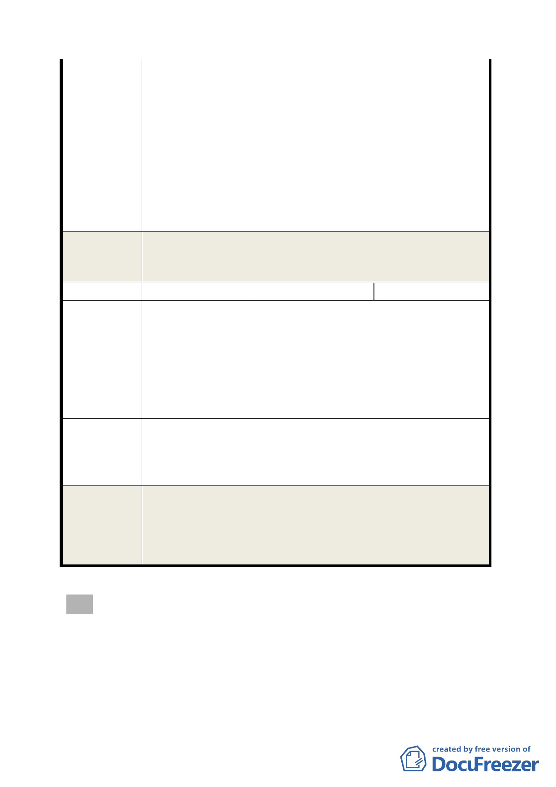

92年1月7日府都二字第09126159700號計畫書所述「回
歸本市使用分區管制規則之相關規定」，而非視大彎北
段地主如竊賊，只會偷偷違規使用，為什麼會「官逼
民反」，是值得貴府高官深思之處。本席再度強調願意
為貴府及大彎北段地主間搭起共創市容之橋樑，大彎
北段商業區及娛樂區土地，從高強度之商業區及娛樂
區，委屈作為住宅區，應是全面的、無條件的開放，
至於如何使用應根據台北市分區使用管制規則規定，
由地主自行依市場機制決定，而非處處受不合理、不
合法限制。
另於「修訂臺北市『基隆河（中山橋至成美橋段）附近地區
委 員會決 議 土地使用分區與都市設計管制要點』（北段地區）計畫案」
內考量。
編號
2
陳情人
陳智華
台北市大直北灣段商業區因受經濟部(006688)租金補貼方案
影響，造成租金收益減少，因而開發不利(倒果為因)，且又
受到台北 2010 好好看有十幾個案申請通過增加容積 1 倍(200
陳 情 理 由 ％*2=400％)，而只有宜華大飯店就增加好幾萬㎡商務住
宅，造成不公平的競爭(一般住三 225％、北彎段 160％比 400
％)及價格的破壞，造成住商混合、生活品質下降及各項公共
設施負擔不夠，又造成資源的浪費。
1. 建議政府開放大直北彎段 3 樓以上可做為商務住宅、一般
建議辦法
住宅。
2. 臺北 2010 好好看在大直北彎段的申請案宜限制住宅容積
數量及上限(如 50％上限)。
1. 同編號 1。
委 員會決 議 2. 依本計畫及其他規定得增加容積者，其增加容積之總合不
得超過基準容積 50%，其中適用容積移轉者不得超過基準
容積之 20％。
肆、本次會議因時間已晚，討論事項五與討論事項六留待下次會議
優先討論。
散會（12 時 10 分）。
- 18 -